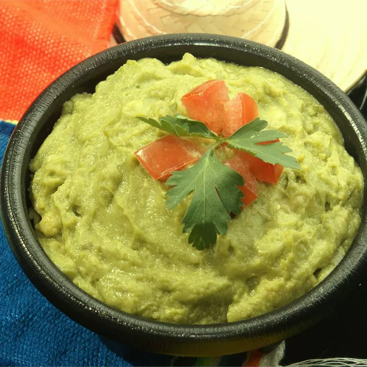

Best Guacamole

This guacamole gets added flavors and bright notes from
fresh lemon juice and chopped onion.
Ingredients
- 2 ovacados
- Half lemon,juiced
- 2 tablespoons chopped onion
- 2 tablespoons olive oil
- half teaspoon salt
Steps
- Cut avocados into halves. Remove seeds and scoop out the pulp into a small
bowl. Use a fork to mash the avocado.
- Stir in lemon juice, onion, olive oil, and salt. Cover the bowl and refrigerate for 1
hour before serving.
Back To Home